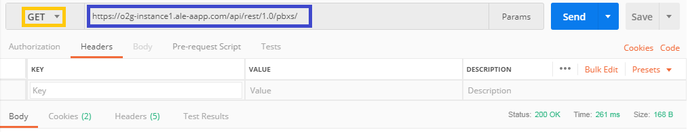
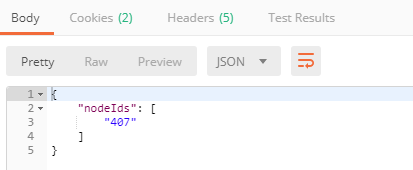
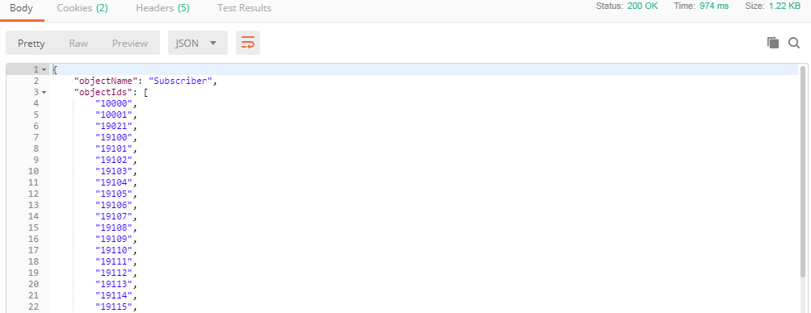
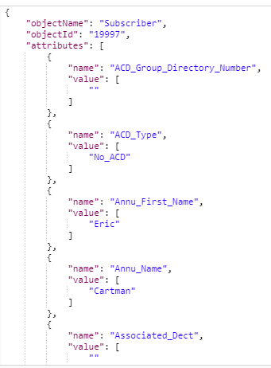
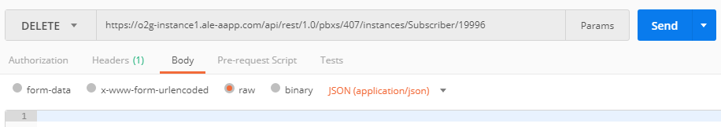

Find your PBX nodeId
- First you need to GET the nodeId of your PBX with this URL :
https://o2g-instance1.ale-aapp.com/api/rest/1.0/pbxs/

- If the request worked you have a "Status: 200 OK" and this type of body with your nodeIds :

Check for a free number
- To check all the number used, you can do a GET on
https://o2g-instance1.ale-aapp.com/api/rest/1.0/pbxs/407/instances/Subscriber
and find if a phone number is used or not.

Create a new user
You need an Admin account for this query.
- Now you can complete this URL :
https://o2g-instance1.ale-aapp.com/api/rest/1.0/pbxs/407/instances/Subscriber
with your own nodeIds do a POST query and fill the in JSON body as below :
{
"attributes": [
{
"name": "Directory_Number",
"value": ["19999"]
},
{
"name": "Annu_Name",
"value": ["Darmon"]
},
{
"name": "Annu_First_Name",
"value": ["Gerard"]
},
{
"name": "Cost_Center_Name",
"value": ["administrator1"]
},
{
"name": "ClickAndPh",
"value": ["A4980_Pro"]
},
{
"name": "Station_Type",
"value": ["SIP_Extension"]
}
]
}
- If you have the "Status: 201 Created", the query succeded.
Get all information about user
When you create a user, all the value that you don't set, will be set by default. If you do this query, you will be able to see all the settings that you can do on a single user. In this case, i want to see all informations about user 19997.
- You juste have to do a GET with this URL https://o2g-instance1.ale-aapp.com/api/rest/1.0/pbxs/407/instances/Subscriber/19997

- And you will have informations like this

- If you have the "Status: 200 OK", the query succeded.
Edit a user
If you want to change one (or more) parameter on an existant user, you have to do that : In this example, I want to change the name and the first name of the user 19996.
- Do a PUT with URL https://o2g-instance1.ale-aapp.com/api/rest/1.0/pbxs/407/instances/Subscriber/19996 and fill the body like this in RAW JSON
{
"attributes": [
{
"name": "Annu_Name",
"value": ["Pitiot"]
},
{
"name": "Annu_First_Name",
"value": ["Franck"]
}
]
}
- If you have the "Status: 204 NO Content", the query succeded.
Delete a user
I want to delete user 19996
- Juste do a DELETE with URL https://o2g-instance1.ale-aapp.com/api/rest/1.0/pbxs/407/instances/Subscriber/19996

- If you have the "Status: 204 No Content", the query succeded.